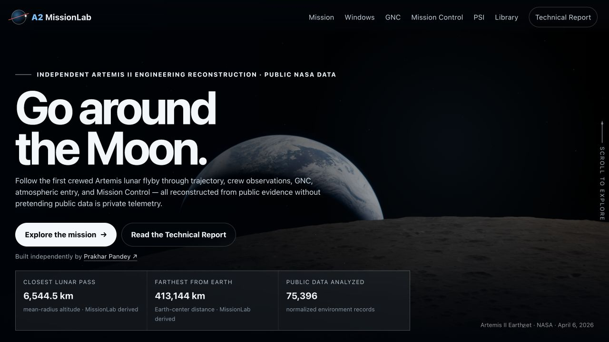

Project homepage · captured November 16, 2026 ↗Independent project · Public-data mission analysis
A2 MissionLab
Artemis II from a mission control perspective
Pick an event on the mission clock, find Orion on its trajectory, and open the public record behind it. Then explore the engineering models to see how a change in a maneuver affects the flight.
Python · SPICEyPy · NumPy · JavaScript